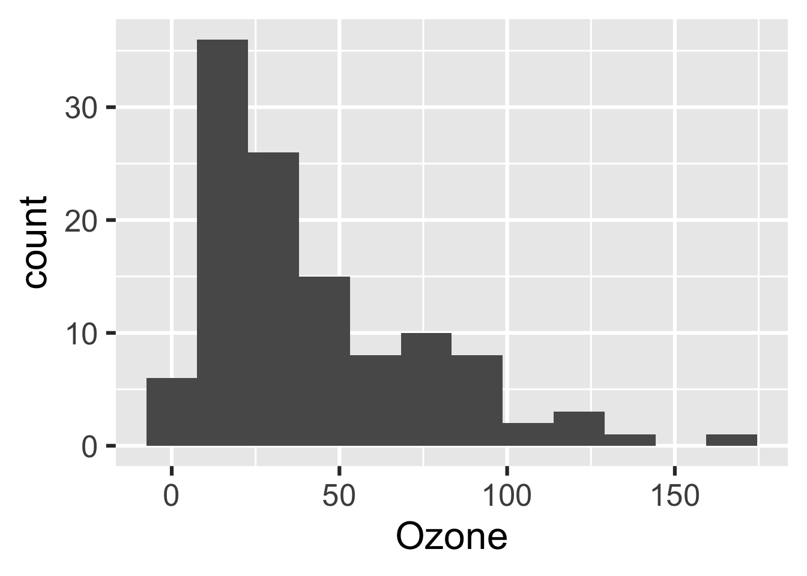

Chapter 3 Target Markdown
Target Markdown, available in targets > 0.4.2.9000, is a powerful R Markdown interface for reproducible analysis pipelines. With Target Markdown, you can define a fully scalable pipeline from within one or more R Markdown reports, anything from a single report to a whole bookdown or workflowr project. You get the best of both worlds: the human readable narrative of literate programming, and the sophisticated caching and dependency management systems of targets.
3.1 Access
The example from this chapter is available as a Target Markdown document through RStudio R Markdown template system: https://rstudio.github.io/rstudio-extensions/rmarkdown_templates.html. In the RStudio IDE, select a new R Markdown document in the New File dropdown menu in the upper left-hand corner of the window.

Then, select the Target Markdown template and click OK to open a copy of the report for editing.

3.2 Engine
Target Markdown uses a special knitr language engine. R Markdown code chunks begin with {targets} rather than {r}, and there are special chunk options:
tar_globals: Logical, whether to define globals or targets. IfTRUE, the chunk code defines functions, objects, and options common to all the targets. IfFALSEorNULL(default), then the chunk returns formal targets for the pipeline.tar_interactive: Logical, whether to run in interactive mode or non-interactive mode. Defaults to the return value ofinteractive().tar_script: Character of length 1, where to write the target script file in non-interactive mode. Most users can skip this option and stick with the default_targets.Rscript path. Helper script files are always written next to the target script in a folder with an"_r"suffix. Thetar_scriptpath must either be absolute or be relative to the project root (where you calltar_make()or similar). If not specified, the target script path defaults totar_config_get("script")(default:_targets.R; helpers default:_targets_r/). When you runtar_make()etc. with a non-default target script, you must select the correct target script file either with thescriptargument or withtar_config_set(script = ...). The function willsource()the script file from the current working directory (i.e. withchdir = FALSEinsource()).
3.3 Modes
The {targets} engine can run in interactive or non-interactive mode. Interactive mode is for prototyping and testing, while non-interactive mode is for pipeline construction. Pipeline development is continual back-and-forth between exploratory analysis and serious runs, so most users will frequently switch modes. The default mode is whatever interactive() returns, so the notebook interface defaults to interactive (https://bookdown.org/yihui/rmarkdown/notebook.html) and the Knit button in RStudio defaults to non-interactive. However, you can control the mode with the tar_interactive chunk option. You can even set the default mode for the whole report:
```{r}
knitr::opts_chunk$set(tar_interactive = FALSE)
```The following example demonstrates both modes.
3.4 Example
The following example is based on the minimal targets project at https://github.com/wlandau/targets-minimal/. We process the base airquality dataset, fit a model, and display a histogram of ozone concentration.
3.5 Packages
This example requires several R packages, and targets must be version 0.5.0 or above.
# R console
install.packages(c("biglm", "dplyr", "ggplot2", "readr", "targets", "tidyr"))3.6 Setup
First, load targets to activate the specialized knitr engine for Target Markdown.
```{r}
library(targets)
```Early on, you may also wish to remove the leftover _targets_r directory from a previous run in non-interactive mode.
```{r}
tar_unscript()
```3.7 Globals
As usual, your targets depend on custom functions, global objects, and tar_option_set() options you define before the pipeline begins. Define these globals using the {targets} engine with tar_globals = TRUE chunk option. In interactive mode, the chunk simply runs the R code in the tar_option_get("envir") environment (usually the global environment).
```{targets, tar_globals = TRUE, tar_interactive = TRUE}
options(tidyverse.quiet = TRUE)
tar_option_set(packages = c("biglm", "dplyr", "ggplot2", "readr", "tidyr"))
create_plot <- function(data) {
ggplot(data) +
geom_histogram(aes(x = Ozone), bins = 12) +
theme_gray(24)
}
```#> Assigned objects to the environment.Here is the same chunk in non-interactive mode. Normally, there is no need to duplicate chunks like this, but we do so here in order to demonstrate both modes.
```{targets chunk-name, tar_globals = TRUE, tar_interactive = FALSE}
options(tidyverse.quiet = TRUE)
tar_option_set(packages = c("biglm", "dplyr", "ggplot2", "readr", "tidyr"))
create_plot <- function(data) {
ggplot(data) +
geom_histogram(aes(x = Ozone), bins = 12) +
theme_gray(24)
}
```#> Established _targets.R and _targets_r/globals/chunk-name.RIn non-interactive mode, the chunk establishes a common _targets.R file and writes the R code to a script in _targets_r/globals/.3 It is good practice to assign explicit chunk labels because they are used as script names. (The labels of unnamed chunks depend on chunk order, which is brittle).4
3.8 Targets
To define targets for the workflow, use the targets engine with the tar_globals chunk option equal FALSE or NULL (default). The return value of the chunk must be a target object or a list of target objects, created by tar_target() or a similar function.
Below, we define a target to establish the air quality dataset in the pipeline. If you run this chunk in interactive mode, the target’s R command runs, the engine tests if the output can be saved and loaded from disk correctly, and then the return value gets assigned to the tar_option_get("envir") environment (usually the global environment). In the process, some temporary files are created and destroyed, but your local file space will remain untouched (barring any custom side effects in your custom code).
```{targets, tar_interactive = TRUE}
tar_target(raw_data, airquality)
```#> Ran targets and assigned them to the environment.After you run a target in interactive mode, the return value is available in memory.
```{r}
head(raw_data)
```head(raw_data)
#> Ozone Solar.R Wind Temp Month Day
#> 1 41 190 7.4 67 5 1
#> 2 36 118 8.0 72 5 2
#> 3 12 149 12.6 74 5 3
#> 4 18 313 11.5 62 5 4
#> 5 NA NA 14.3 56 5 5
#> 6 28 NA 14.9 66 5 6For demonstration purposes, here is the same chunk in non-interactive mode. In non-interactive mode, the {targets} engine does not actually run any targets. Instead, it establishes a common _targets.R and writes the code to a script in _targets_r/targets/.
```{targets chunk-name-with-target, tar_interactive = FALSE}
tar_target(raw_data, airquality)
```#> Established _targets.R and _targets_r/targets/chunk-name-with-target.RNext, we define more targets to process the raw data, plot a histogram, and fit a model. Remember: when it comes to targets in the pipeline, only the return value of the chunk actually counts. So if you define multiple targets in a single chunk, be sure to wrap them in a list.
```{targets downstream-targets}
list(
tar_target(data, raw_data %>% filter(!is.na(Ozone))),
tar_target(hist, create_plot(data)),
tar_target(fit, biglm(Ozone ~ Wind + Temp, data))
)
```#> Established _targets.R and _targets_r/targets/downstream-targets.RIn interactive mode, it is good practice to inspect the outputs to make sure the targets ran properly. You can do this with ordinary {r} code chunks.
```{r, eval = FALSE}
fit
``````{r, eval = FALSE}
hist
```3.9 Pipeline
If you ran all the {targets} chunks in non-interactive mode, you are ready to run the pipeline in with tar_make() in an ordinary {r} code chunk. This time, the output is written to persistent storage at the project root.
```{r}
tar_make()
```#> • start target raw_data
#> • built target raw_data
#> • start target data
#> • built target data
#> • start target fit
#> • built target fit
#> • start target hist
#> • built target hist
#> • end pipeline3.10 Output
You can retrieve results from the _targets/ data store using tar_read() or tar_load().
```{r}
library(biglm)
tar_read(fit)
```#> Large data regression model: biglm(Ozone ~ Wind + Temp, data)
#> Sample size = 116```{r}
tar_read(hist)
```
The targets dependency graph helps your readers understand the steps of your pipeline at a high level.
```{r}
tar_visnetwork()
```At this point, you can go back and run {targets} chunks in interactive mode without interfering with the code or data of the non-interactive pipeline.
The
_targets.Rfile from Target Markdown never changes from chunk to chunk or report to report, so you can spread your work over multiple reports without worrying about aligning_targets.Rscripts. Just be sure all your chunk names are unique across all the reports of a project.↩︎All chunk labels must be unique. And for
bookdownprojects, chunk labels should only use alphanumeric characters and dashes.↩︎